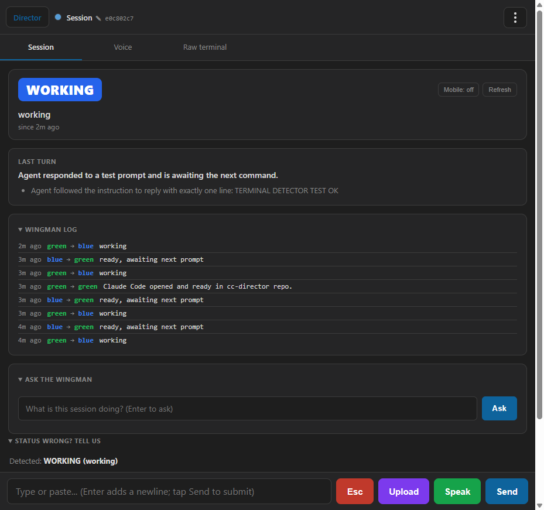
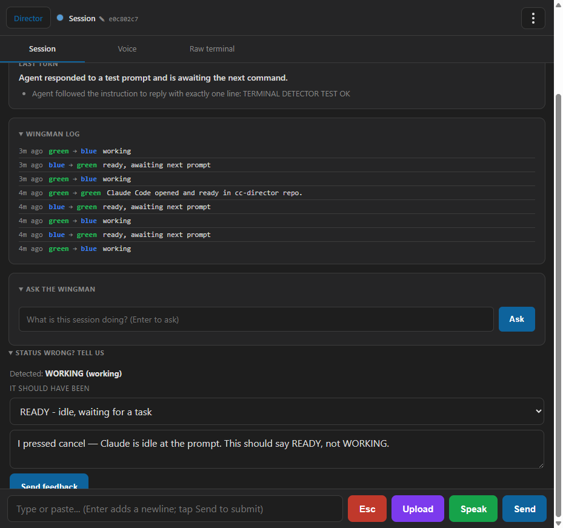

End-to-end implementation report · generated 2026-05-24 · verified against a live Director (slot 4, port 7881)
.jsonl files, so it works for any agent and cannot cross-contaminate. When it gets a state wrong, you correct it from the phone in two taps and the correction is filed to a GitHub issue with full context.
| Step | Status | What it does |
|---|---|---|
| 1. Terminal drives state | DONE | A TerminalStateDetector derives ActivityState and turn boundaries from the session's own PTY byte stream. Output flowing → WORKING; quiet 5s → the LLM judge reads the screen and labels it READY / NEEDS YOU / PERMISSION. Process exit → ENDED. |
| 2. Stop relying on hooks | DONE + deferred cleanup | Hooks are now inert — the new build ignores them for state and does not install them in terminal mode. Physical deletion of the hook code is deferred (see why). |
| 3. Human vote → GitHub | DONE | A "Status wrong? Tell us" panel on the mobile session view. Pick the correct state + a note → saved locally and appended to one GitHub tracking issue with the terminal tail. |
Claude Code event
→ spawn powershell relay
→ write JSON file to a
SHARED events folder
→ every Director's watcher
sees every file
→ route by ClaudeSessionId
→ Session state
claude.exe stdout →(in-process pipe) → this Session's own Buffer → TerminalStateDetector → Session state
A real Claude Code session was created in D:\ReposFred\cc-director and driven with one prompt. State below is 100% terminal-derived.
| Time | Detected state | What happened |
|---|---|---|
| 11:07:45 | READY | Claude finished booting; output went quiet |
| 11:08:21 | WORKING | Prompt sent; response streaming — detected instantly from bytes |
| 11:08:29 | READY | Reply done, 5s quiet — turn complete |
| 11:08:37 | WORKING | Claude re-activated (running hooks) — LLM judge confirmed it (below) |
When the terminal goes quiet, the judge reads the screen and cites the actual evidence:
[TerminalStateDetector] … terminal=QUIET (5.0s no output) | hook=Working [TerminalStateDetector] … LLM verdict=waiting_for_input ("The prompt (❯) is displayed and ready for the next command; no spinner or active operation visible at the bottom.") [TerminalStateDetector] … LLM verdict=working ("Elapsed-time counter 'Brewed for 2s' and active hook execution ('running sp hooks... 0/3') with esc to interrupt footer indicates active processing.")
Note the second line: the byte gate flipped to active and the judge correctly distinguished real work ("Brewed for 2s", "esc to interrupt") from an idle prompt. This is exactly the case the old hooks got stuck on.
The session view's LAST TURN, built only from the terminal buffer:
LAST TURN
Agent responded to a test prompt and is awaiting the next command.
- Agent followed the instruction to reply with exactly one line:
TERMINAL DETECTOR TEST OK

Live session on a phone-style view. The WORKING hero, the terminal-derived LAST TURN, the Wingman log of terminal-driven transitions (green↔blue), and at the bottom the new "STATUS WRONG? TELL US" panel showing Detected: WORKING.
At the bottom of every session view there is a "Status wrong? Tell us" panel. Three steps:
Detected: WORKING (working)).
The vote panel expanded: detected state, the "it should have been" picker set to READY, and a free-text reason.
A live vote was submitted during testing. The server response:
VOTE RESULT: saved=True postedToGitHub=True detail=posted to GitHub issue #131
%LOCALAPPDATA%\cc-director\state-votes\votes.jsonl — so feedback is never lost even if GitHub is down.Each GitHub comment carries the detected vs. correct state, your note, the agent, and the terminal tail — everything needed to improve detection:
### State correction - 2026-05-24 15:09:48 UTC - Detected: WORKING (running sp hooks) - Should have been: READY - Agent: ClaudeCode - Repo: D:\ReposFred\cc-director <details><summary>Terminal tail (ANSI stripped)</summary> … </details>
.jsonl — no cross-contamination.EventRouter, PipeMessage, relay, file watcher) is staged, not done, for two concrete reasons:
EventRouter — rewriting that is Avalonia UI I can't run-verify here.~/.claude/settings.json hooks are shared; auto-uninstalling them would break your other live Directors mid-session.Generated by Claude Code for cc-director. Screenshots captured from the live slot-4 Director via cc-playwright. GitHub issue: thefrederiksen/cc-director#131.